File: 000060.gt.txt (if the image is defective, simply delete all Arabic text and the line will be excluded)
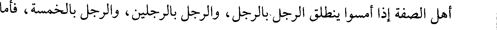
أهل الصفة إذا أمسوا ينطلق الرجل بالرجل، والرجل بالرجلين، والرجل بالخمسة، فأما
File: 000061.gt.txt (if the image is defective, simply delete all Arabic text and the line will be excluded)
سعد بن عبادة فكان ينطلق بثمانين كل ليلة.
File: 000062.gt.txt (if the image is defective, simply delete all Arabic text and the line will be excluded)
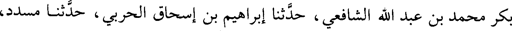
بكر محمد بن عبد الله الشافعي، حدثنا إبراهيم بن إسحاق الحربي، حدثنا مسدد،
File: 000063.gt.txt (if the image is defective, simply delete all Arabic text and the line will be excluded)
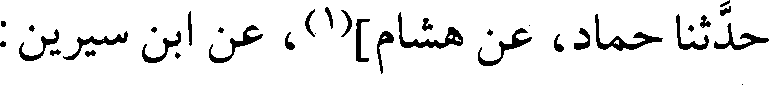
حدثنا حماد، عن هشام](1)، عن ابن سيرين:
File: 000064.gt.txt (if the image is defective, simply delete all Arabic text and the line will be excluded)
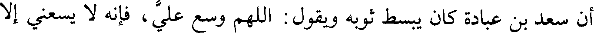
أن سعد بن عبادة كان يبسط ثوبه ويقول: اللهم وسع علي، فإنه لا يسعني إلا
File: 000065.gt.txt (if the image is defective, simply delete all Arabic text and the line will be excluded)
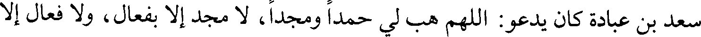
سعد بن عبادة كان يدعو: اللهم هب لي حمدا ومجدا، لا مجد إلا بفعال، ولا فعال إلا
File: 000066.gt.txt (if the image is defective, simply delete all Arabic text and the line will be excluded)
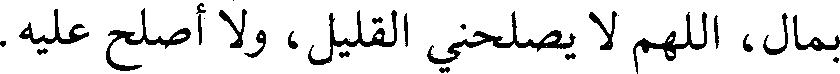
بمال، اللهم لا يصلحني القليل، ولا أصلح عليه.
File: 000067.gt.txt (if the image is defective, simply delete all Arabic text and the line will be excluded)
يحيى؛ يعني ابن أبي كثير](3) قال: كان للنبي صلعم من سعد كل يوم جفنة تدور معه حيث
File: 000068.gt.txt (if the image is defective, simply delete all Arabic text and the line will be excluded)
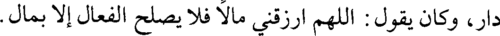
دار، وكان يقول: اللهم ارزقني مالا فلا يصلح الفعال إلا بمال.
File: 000069.gt.txt (if the image is defective, simply delete all Arabic text and the line will be excluded)
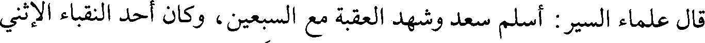
قال علماء السير: أسلم سعد وشهد العقبة مع السبعين، وكان أحد النقباء الاثني
File: 000070.gt.txt (if the image is defective, simply delete all Arabic text and the line will be excluded)
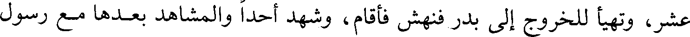
عشر، وتهيأ للخروج إلى بدر فنهش فأقام، وشهد أحدا والمشاهد بعدها مع رسول
File: 000071.gt.txt (if the image is defective, simply delete all Arabic text and the line will be excluded)
الله صلعم.
File: 000072.gt.txt (if the image is defective, simply delete all Arabic text and the line will be excluded)
ولما توفي رسول الله صلعم اجتمعت الأنصار فأمروه، فلما بويع لأبي بكر لم يبايعه
File: 000073.gt.txt (if the image is defective, simply delete all Arabic text and the line will be excluded)
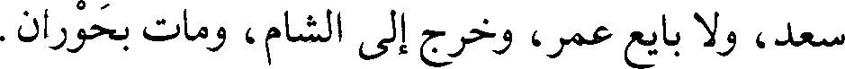
سعد، ولا بايع عمر، وخرج إلى الشام، ومات بحوران.
File: 000074.gt.txt (if the image is defective, simply delete all Arabic text and the line will be excluded)
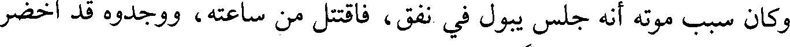
وكان سبب موته أنه جلس يبول في نفق، فاقتتل من ساعته، ووجدوه قد اخضر
File: 000075.gt.txt (if the image is defective, simply delete all Arabic text and the line will be excluded)
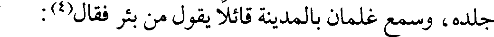
جلده، وسمع غلمان بالمدينة قائلا يقول من بئر فقال(4):
File: 000076.gt.txt (if the image is defective, simply delete all Arabic text and the line will be excluded)
186
File: 000077.gt.txt (if the image is defective, simply delete all Arabic text and the line will be excluded)
176-سلمة بن هشام بن المغيرة(1):
File: 000078.gt.txt (if the image is defective, simply delete all Arabic text and the line will be excluded)
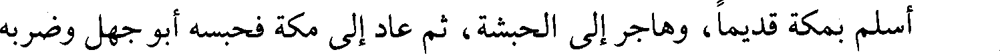
أسلم بمكة قديما، وهاجر إلى الحبشة، ثم عاد إلى مكة فحبسه أبو جهل وضربه
File: 000079.gt.txt (if the image is defective, simply delete all Arabic text and the line will be excluded)
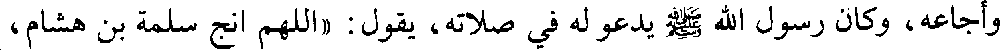
وأجاعه، وكان رسول الله صلعم يدعو له في صلاته، يقول: «اللهم انج سلمة بن هشام،
File: 000080.gt.txt (if the image is defective, simply delete all Arabic text and the line will be excluded)
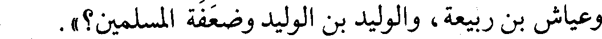
وعياش بن ربيعة، والوليد بن الوليد وضعفة المسلمين؟».
File: 000081.gt.txt (if the image is defective, simply delete all Arabic text and the line will be excluded)
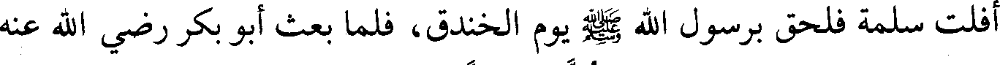
أفلت سلمة فلحق برسول الله صلعم يوم الخندق، فلما بعث أبو بكر رضي الله عنه
File: 000082.gt.txt (if the image is defective, simply delete all Arabic text and the line will be excluded)
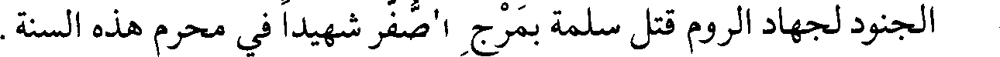
File: 000083.gt.txt (if the image is defective, simply delete all Arabic text and the line will be excluded)
177-سليط بن قيس بن عمرو بن عبيد(2) :
File: 000084.gt.txt (if the image is defective, simply delete all Arabic text and the line will be excluded)
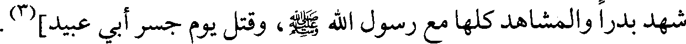
شهد بدرا والمشاهد كلها مع رسول الله صلعم، وقتل يوم جسر أبي عبيد](3).
File: 000085.gt.txt (if the image is defective, simply delete all Arabic text and the line will be excluded)
178-عثمان بن عامر بن عمرو بن كعب، أبو قحافة:
File: 000086.gt.txt (if the image is defective, simply delete all Arabic text and the line will be excluded)
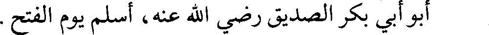
أبو أبي بكر الصديق رضي الله عنه، أسلم يوم الفتح.
File: 000087.gt.txt (if the image is defective, simply delete all Arabic text and the line will be excluded)
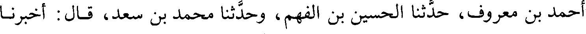
أحمد بن معروف، حدثنا الحسين بن الفهم، وحدثنا محمد بن سعد، قال: أخبرنا
File: 000088.gt.txt (if the image is defective, simply delete all Arabic text and the line will be excluded)
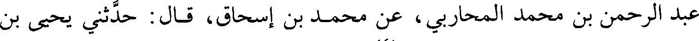
عبد الرحمن بن محمد المحاربي، عن محمد بن إسحاق، قال: حدثني يحيى بن
File: 000089.gt.txt (if the image is defective, simply delete all Arabic text and the line will be excluded)
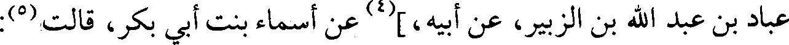
عباد بن عبد الله بن الزبير، عن أبيه،](4) عن أسماء بنت أبي بكر، قالت(5):
To Save: `Ctrl+s`, make sure to choose `Webpage, complete`!